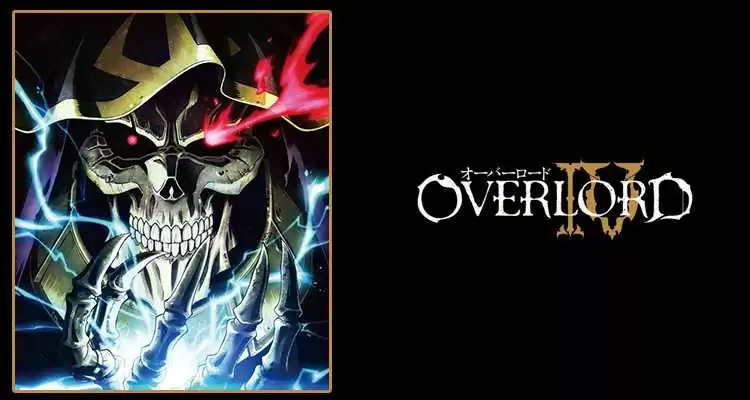
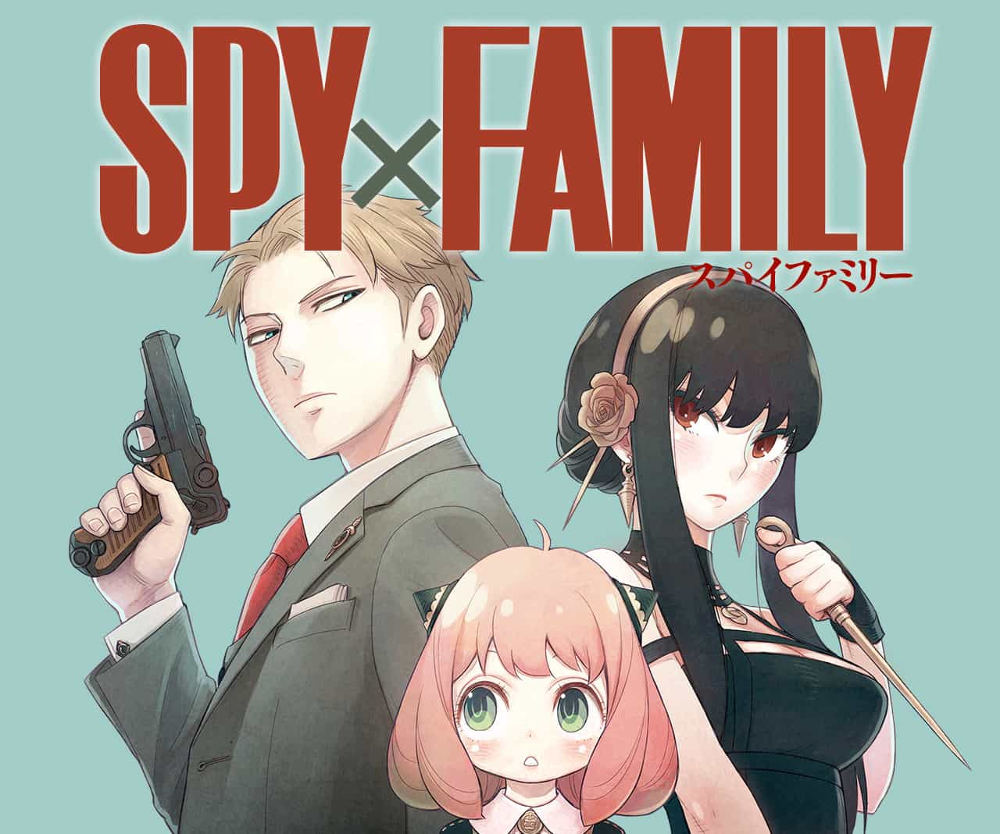

Description: Tanjiro once lived peacefully with his fimaly on the country side of japan's
edo period. This period had some storys about human flesh devoures, demons. One day, after
sleeping over a acquaintace due to the whether, Tanjiro finds... 3ºrd Season.Overlord IV

Description: A popular game called Yggdrasil, a neurolink kind of game, was about to cease
activities, while the protagonist was waiting the countdown for the server he notices that it suddenly
desapeared. And all NPCs now have a complete developed consciousness. Now he has to live has one of the
strogest characters of the game in a world of fantasy that is now his reality. 4ºrth season.
Spy x Family

Description: To avoid the conflict between 2 of the major countries of the world twilight,
the best agents of the world is sent to spy the political environment of the most hostile country.
There he received the task to build a family up in order to have his son/daughter study in the elite
school, to develop a spionage web. He did just that, but he did not knew that his fake daughter is
actually a psychic and his fake wife an assassin. This is a story about secrets and a healthy relationship
beign built in a at lest exotic environment.